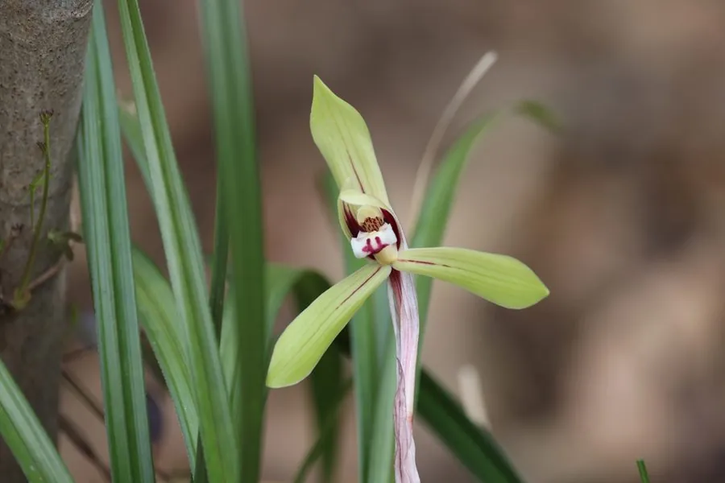

花卉与草本 · 植物界
春兰 Cymbidium goeringii

兰科兰属的多年生草本，一茎一花，花色素雅、香气清幽，与梅、竹、菊并称“四君子”，是中国兰花文化的代表。
- 分类
- 门被子植物门纲木兰纲目天门冬目科兰科属兰属
- 栖息环境
- 疏林下、溪谷旁及腐殖质丰富的山坡，喜半阴湿润环境
- 地理分布
- 中国秦岭以南至西南、华南山区，日本、朝鲜半岛也有分布
- 保护级别
- 暂无评估；兰属野生种列入中国国家二级重点保护野生植物
物种志
春兰为兰科兰属多年生草本，地生，假鳞茎较小，呈卵球形。叶片 4–6 枚丛生，狭带形，长 20–40 厘米，边缘常具细锯齿，叶色深绿而有光泽。花葶直立，通常一葶一花，偶有两花，花直径 4–6 厘米，花色多为黄绿或淡黄绿色，唇瓣上有紫红色斑点，花期 1–3 月，果期 4–6 月。
春兰分布于中国秦岭以南至广东、广西北部及西南山区，常生于海拔 300–2200 米的疏林下、溪谷旁腐殖质丰富的坡地，喜阴湿通风，忌强光直射和积水。它以清幽的香气和素雅的姿态深受文人喜爱，与梅、竹、菊并称“四君子”，南宋以来兰谱、兰画层出不穷。野生兰属植物已列入中国国家重点保护野生植物名录，采挖和买卖野生兰需遵守相关法规，市售春兰多为人工繁殖。
形态与习性
- 株高叶长 20–40 厘米，花葶高 10–25 厘米
- 花期1–3 月，单朵花可开 20–30 天
- 果期4–6 月，蒴果长圆形
- 光照喜半阴散射光，忌强光直射
- 水分喜湿润，要求空气湿度 60% 以上
- 土壤疏松透气、富含腐殖质的微酸性土壤
- 繁殖以分株为主，也可无菌播种
趣味知识
- 春兰并非每年都开花，需假鳞茎积累足够养分并经历低温刺激。
- 兰花种子细如粉尘且没有胚乳，野外必须与特定真菌共生才能萌发。
- 春兰的香气来自花瓣中的挥发性芳香物质，清晨与夜间更为明显。
- 传统上按花瓣形态将兰花分为梅瓣、荷瓣、水仙瓣等品系。